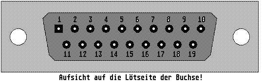

Previous
Next
TOC
Die Pinbelegung der Falcon030 Monitorbuchse
1 Farbe Rot
11 Ground
2 Farbe Grün
12 Composite Sync
3 Farbe Blau
13 Horizontal Sync
4 Monochrom Video
14 Vertikal Sync
5 Ground
15 Extern Clock
6 Farbe Rot Ground
16 Even ODD
7 Farbe Grün Ground
17 +12V für Scart
8 Farbe Blau Ground
18 Videomode 1
9 Audio Out
19 Videomode 2
10 Ground

Der VGA Adapter zum selberbauen
Der SM124 Adapter zum selberbauen
weiterblättern
Kapitel Die Pinbelegung der Falcon030 Monitorbuchse, Seite 1